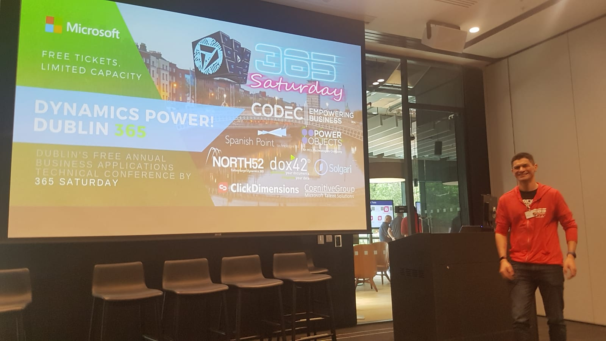

Solution Architect having fun in this profession for 20 years. I have a broad experience in different sectors like Aircraft Manufacturing, Finance, Environmental Protection, Chemical, Media and Public Sector.
During these years I worked in different roles but mainly designing and delivering systems based on the Microsoft platform. Lately I have had the pleasure to learn and contribute to the Dynamics 365 platform, where I help customers to get the most of their Dynamics implementation, either in on-premise deployments or in the cloud.
I am an open creative person, with energy and integrity. I really enjoy working in collaborative environments, I adapt very well to changes and I am constantly looking for new challenges.

Find me in LinkedIn
My Timeline
See some of the events that took place during my personal and proffessional career.
- Today
- May 2019: Promoted to Team Leader
- Apr 2019: Organized a Dynamics 365 Hackathon
- Sep 2015: Won a Dragon’s Den contest for business ideas
- Mar 2015: Started a job as Senior Consultant
- Mar 2015: Moved to Ireland
- Dec 2014: Promoted to Senior Consultant
- Jan 2013: Won the Delivery Excellence Award in my company
- Apr 2012: Started working as CRM Consultant
- Oct 2006: Started working as Developer Consultant
- Sep 2001: Started a position as Senior Developer
- Jan 2001: Started a developer internship
- Sep 2000: Started my first job in Spain
- Oct 1999: Began my studies in Computer Science
- Sep 1999: Moved to Spain
- Dec 1998: Finished Secondary School
- Feb 1982: A geek is born